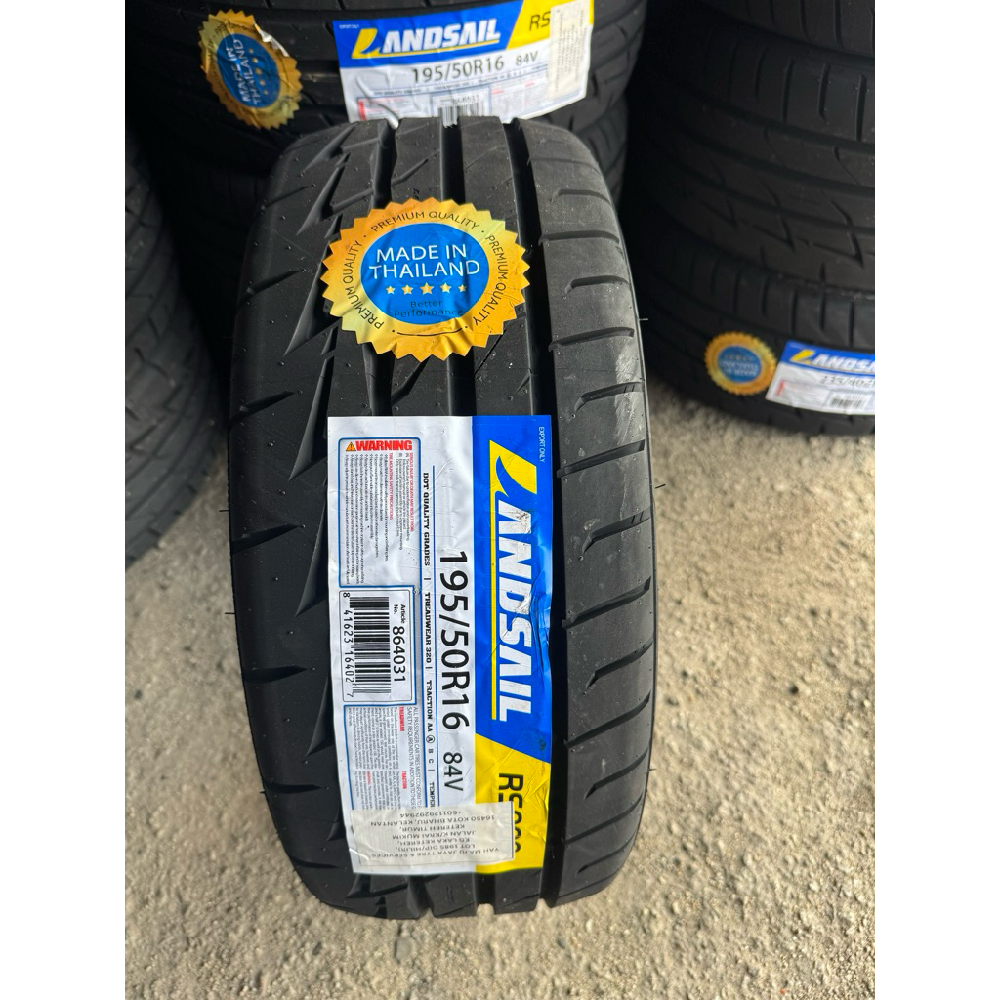

LANDSAIL RS009 195/50R16

RM 208.00
Landsail RS009 is a passenger car tyre designed for everyday driving, offering balanced handling, driving comfort and reliable road performance at an affordable price. Suitable for daily city driving and highway journeys. Tyre Size: 195/50R16 Country of Manufacture: Thailand Key Features: * Balanced wet and dry performance * Stable handling and steering response * Comfortable everyday driving * Designed for effective water drainage * Suitable for city and highway driving * Good value for money
Klang Hock Li Tyre Services Sdn Bhd, Klang, Selangor, Malaysia.
View live product details and enquire